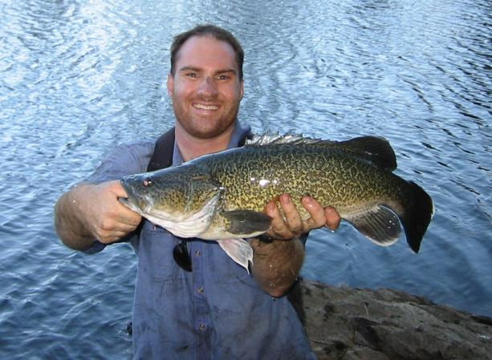
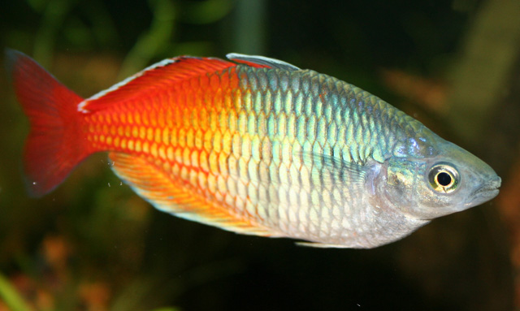
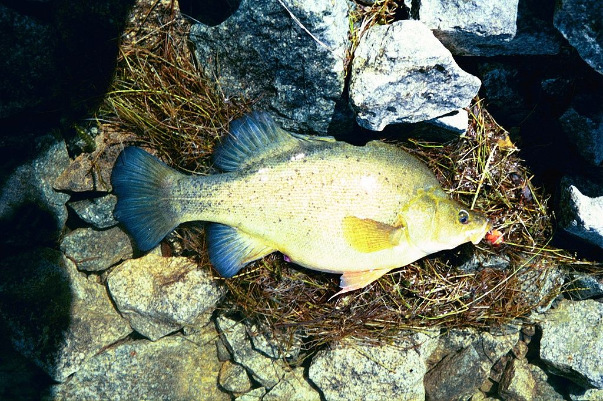

Fish
Freshwater fish of Australia are limited to approximately 280 species, even though the Australian continent is larger than the contiguous United States. The small number of species found in Australian inland waters is partly because Australia is the driest continent on earth. Rainfall is sporadic over much of the continent, and fish cannot live in many of the desert regions of South Australia and Western Australia. Most freshwater species are found in tropical or subtropical regions.
A large proportion of freshwater species are endemic to Australia. Australia is unique in that the family Percicthyidae (temperate perches) and other families suspected in reality to lie within it (e.g. Gadopsidae, Nannopercidae) have risen to prominence in and dominate many of its freshwater systems, in contrast to the Northern Hemisphere where freshwater fish faunas are overwhelmingly dominated by the carp family, Cyprinidae. (No cyprinid species is native to Australia). Due to the illegal introduction of carp (Cyprinus carpio), Cyprinidae is now present in a destructive form in Australia. The Galaxiidae have also risen to unusual prominence in Australia, with the bulk of the world's Galaxias species found in Australia and its neighbouring land mass New Zealand.The most important freshwater system in Australia is the Murray-Darling Basin which drains approximately 13% of the continent and contains some of Australia's most significant freshwater fish species including the Murray Cod, Australia's largest freshwater fish.
Australian freshwater fish have not fared well since European settlement of Australia in 1788. The majority of Australian freshwater fishes are poorly understood and are under threat due to human activities such clearing of riparian vegetation and siltation associated with agricultural practices, snag removal, overfishing, river regulation through dams and weirs, introduced fish and diseases. Two native fish populations that may have been separate species or sub-species, the Richmond River cod and the Brisbane River cod, are extinct, and a number of other species are listed as endangered or critically endangered.
Introduced Fish
Due to its geographical situation and isolation Australia has distinct fish fauna, including many endemic species. From the 18th century, early colonisers began introducing a number of exotic species including mammals, plant, birds and fish. The introduction of the fish has led to serious ecological damage, most notable being the effect of common carp in the Murray-Darling Basin. Introduced carp now dominate the freshwater systems of southern Australia. While the damaging impact of carp is well recognised, little in the way of control measures have been employed to control their spread. Their ability to colonise almost any body of water, even those previously considered to be beyond their physical tolerances, is now well established. Control of exotic fish species is being undertaken by various government departments, though many problems are faced.
Introduced trout species dominate the upland reaches of rivers in south-east Australian, and may have negative effects on upland native fish like the mountain galaxias species, Macquarie perch and the unfortunately named trout cod, but due to their popularity as sportsfish, lack of historical records, and loss of angling memories, their damaging effects are not widely understood.
  